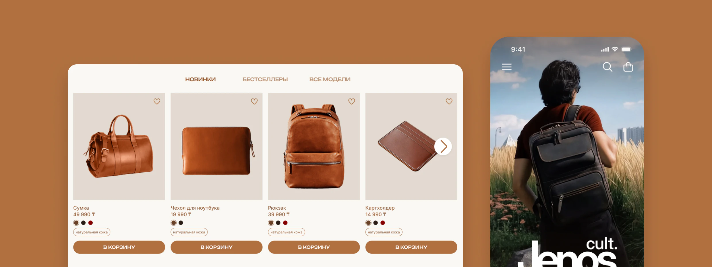
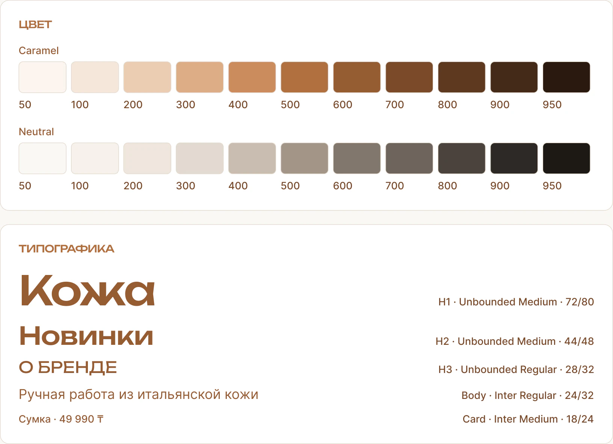
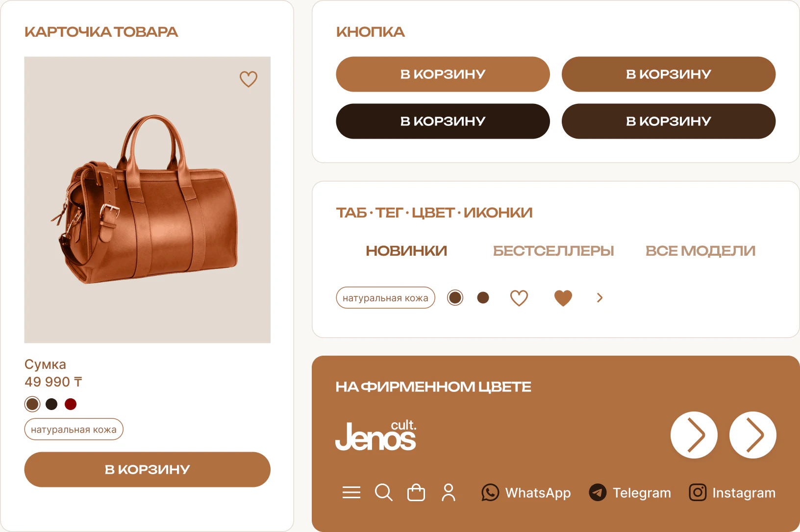
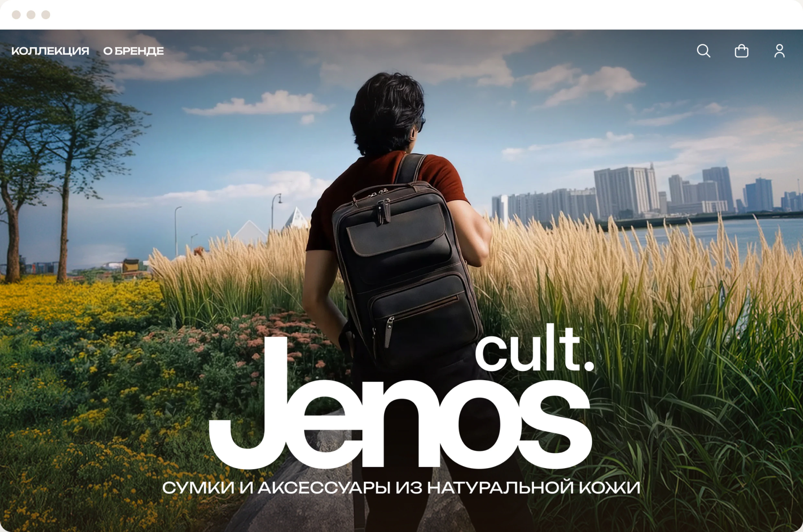
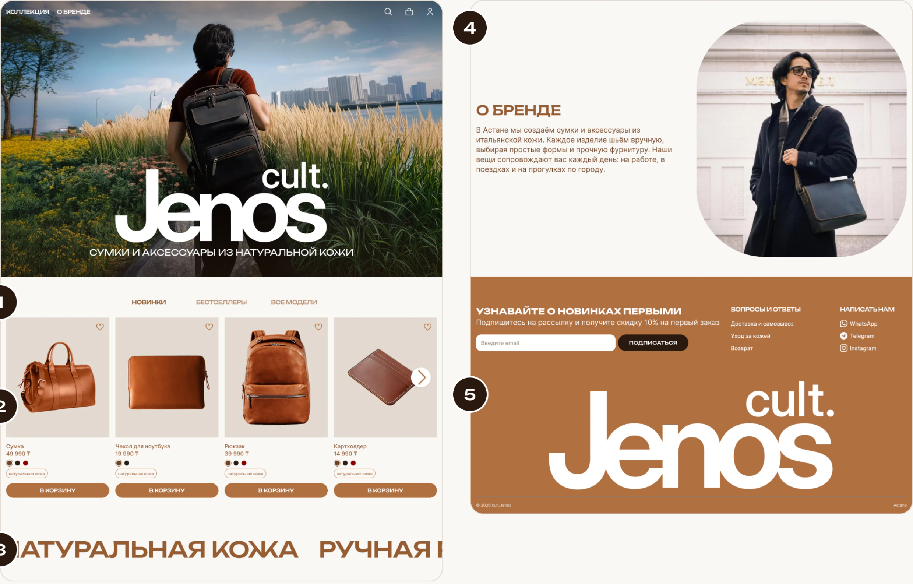
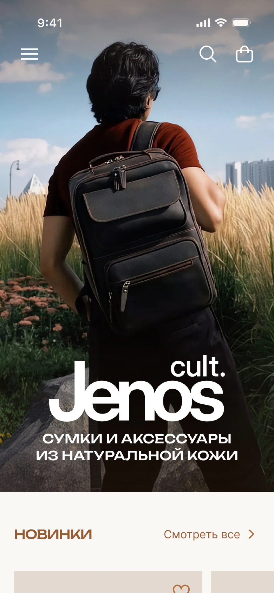
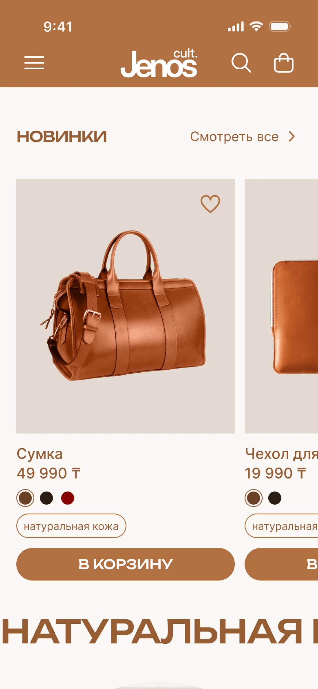
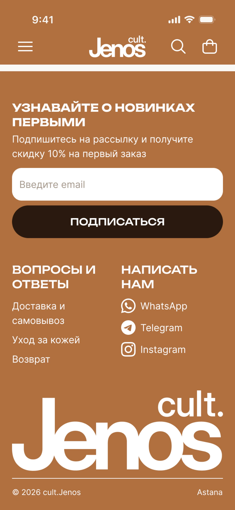

cult.Jenos

Коротко о кейсе
Проблема
Сайта у бренда нет: цены и детали покупатель ищет в публикациях и уточняет в переписке, а бренд продаёт только через мессенджеры.
Решение
Главная интернет-магазина: новинки с ценой и цветами, кнопка «В корзину» в каждой карточке, мессенджеры — только для вопросов.
Результат
Макеты главной для десктопа и мобильных на одном UI-kit: 20 компонентов, 38 цветовых переменных и 12 текстовых стилей.
О проекте
cult.Jenos — бренд кожаных сумок и аксессуаров из Астаны. Изделия шьют вручную из итальянской кожи и доставляют по всему Казахстану. Бренд представлен в Instagram, WhatsApp и 2GIS, отдельного интернет-магазина у него нет.
Это мой личный концепт: бренд его не заказывал, клиентского брифа не было, все решения я принимал сам. Я спроектировал главную страницу интернет-магазина в десктопной и мобильной версиях. Сделал бриф, референсы, структуру, вайрфреймы, UI-kit и макеты.
Референсы
Я разобрал пять интернет-магазинов и выписал, что взять, а чего избегать. В основу концепции легли светлая палитра, свободное пространство и крупные фотографии, которые подчёркивают фактуру кожи и детали изделий.
Craftory
- Что взял
- Крупные фото и типографика на первом экране
- Что не подошло
- Холодная подача не подходит к тёплой палитре бренда
re_grocery
- Что взял
- Табы с товарами сразу после первого экрана, бегущая строка
- Что не подошло
- Яркая продуктовая подача не сочетается со сдержанным тоном бренда
Bellroy
- Что взял
- Образцы доступных цветов в карточке товара
- Что не подошло
- Масс-маркет и перегруженные страницы не подходят бренду ручной работы
hardgraft
- Что взял
- Простота подачи
- Что не подошло
- —
STOILOV
- Что взял
- —
- Что не подошло
- Пафосные тексты и шаблонные приёмы расходятся со спокойным тоном бренда
Для главной я выбрал крупный первый экран, табы с товарами, бегущую строку и образцы доступных цветов в карточках.
Структура
Главная рассказывает о бренде и показывает новинки. Весь ассортимент будет в каталоге, которого в концепте пока нет.
UI-kit
Цвета, отступы и шрифты в макетах взяты из переменных и стилей.
- 23 цветовых примитива и 15 семантических токенов на основе палитр Caramel и Neutral.
- 15 токенов отступов, скруглений и сетки с режимами desktop и mobile.
- 12 текстовых стилей: заголовки — Unbounded, текст — Inter, межстрочный интервал кратен 4 px.

Компоненты
В библиотеке 20 компонентов, среди них иконки, кнопки, карточка товара, хедер и футер. Наведение на кнопку и активный таб заданы вариантами. Хедер и футер переключаются между десктопом и мобильной версией одним свойством, поэтому правку достаточно сделать в одном месте.

Десктоп
Фото на всю ширину, логотип и краткое описание продукции. Сверху и снизу фото слегка затемнено, чтобы текст и навигация читались на любом снимке. Над фото хедер прозрачный, при прокрутке у него появляется фон.

Все блоки выровнены по 12-колоночной сетке, а отступы заданы единой системой токенов.
- Табы занимают шесть колонок по центру.
- Каждая карточка — три колонки, стрелка показывает следующие.
- Бегущая строка идёт на всю ширину экрана.
- В блоке «О бренде» текст слева, фото справа.
- Логотип в футере занимает восемь колонок.

Мобильная версия
Мобильная версия собрана из тех же компонентов, что и десктоп. В режиме mobile шрифты и отступы меньше, сетка — на четыре колонки.
На мобильной главной оставлена подборка новинок, к остальным товарам ведёт ссылка «Смотреть все». Карточки листаются вбок, хедер закреплён сверху.



Ключевые решения
Решения помогают познакомиться с товарами и перейти к покупке. Полный сценарий заказа ещё предстоит разработать.
Корзина вместо чата
Кнопка «В корзину» есть у каждой карточки, поиск и иконка сумки — в хедере. Мессенджеры остались в футере для вопросов.
Закреплённый хедер
Хедер остаётся наверху при прокрутке. Поиск и корзина открываются одним нажатием с любого места страницы.
Без нижнего таббара
Основные действия собраны в закреплённом хедере. Нижнюю панель я не добавлял, чтобы оставить больше места для товаров.
Карусель на мобильном
Часть следующей карточки у края подсказывает, что ленту можно листать вбок.
«Смотреть все» на мобильном
Трём табам тесно на экране телефона, поэтому на мобильной главной только новинки.
Особенности одной строкой
Натуральная кожа, ручная работа и доставка по Казахстану заняли место трёх блоков доверия, и главная осталась короткой.
Метрики
Магазин не запущен, поэтому цифр нет. После запуска проверял бы главную по этим метрикам:
Что дальше
Макеты главной готовы. Чтобы сайт заработал как магазин, нужно:
- Каталог. Все модели с фильтрами по категории, цвету и цене.
- Карточка товара. Фото, цвета, что помещается внутрь, уход и доставка.
- Корзина и оформление. Доставка по Казахстану, оплата и скидка для подписчиков.
- Прототип. Кликабельный путь от главной до заказа.
- Тестирование. Показать прототип покупателям и найти, где им трудно оформить заказ.